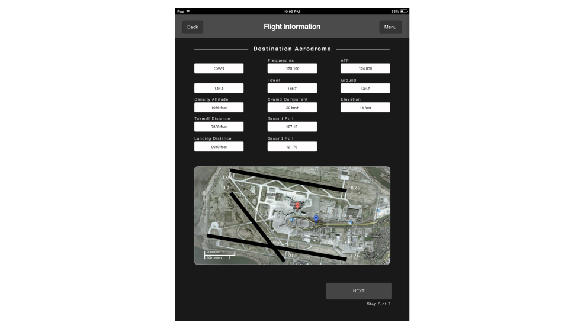
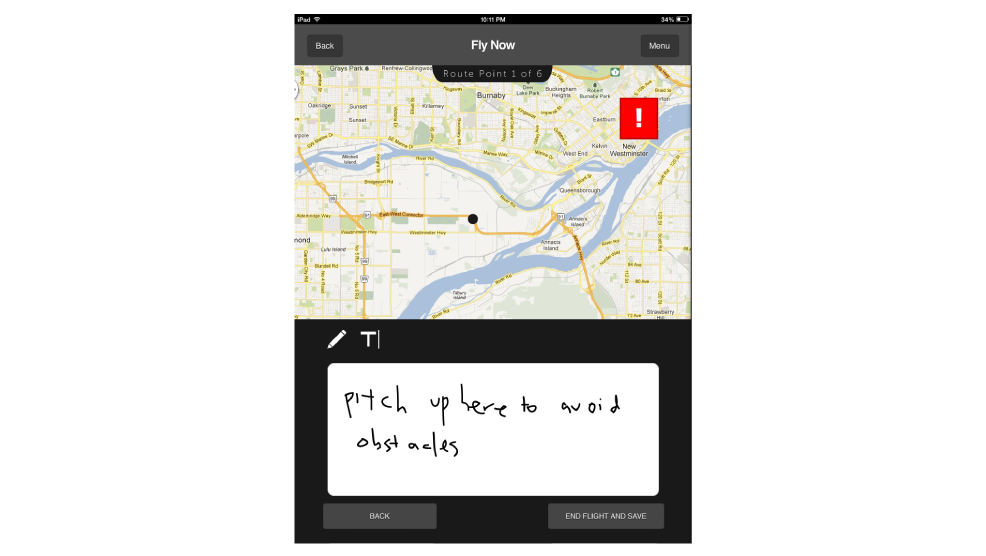

Type
UX
UI
Interaction
Role
Visual lead
Interaction designer
Interface designer
Cinematographer
Film editor
Tools


Team
Brendan DeBrincat
Soojin Lee
Yan Yao Li
Debra Wong
Objective
Design an application for novice pilots to help them achieve their needs and goals.
Process
The brief given was to design for novice drivers, but the team decided to take one step further in looking at novice pilots. The reason for such is that most design problems revolves around transportations we use daily, but we wanted to consider how new individuals operate a flying vehicle. Our research began with simple Google searches to understand the general background of pilots, followed by a site visit at the Boundary Bay Airport to interview various types of pilots to gather information about their experiences as a novice. Once all the data were collected, the team began brainstorming various flows that the application can offer in order to achieve the best result, such as ideating with sketches as seen below. Afterwards, screen designs such as the use of colour and typography were implemented which lead to coding a digital prototype. In this project, I was the idea initiator where I was involved in leading the team in terms of visual aesthetics and interactions across the application.
Result
By creating a design in an unknown field, it was a great opportunity to learn about obstacles and knowledge needed to maneuver a vehicle in three-dimensional space. With research conducted, the pilots that we interviewed and executed usability testing told us that the application offers a great educational tool for novice pilots in preparing for their exams which can allow students to understand their weakness to improve on as seen in the mockups below.
Prototype
- 
- 